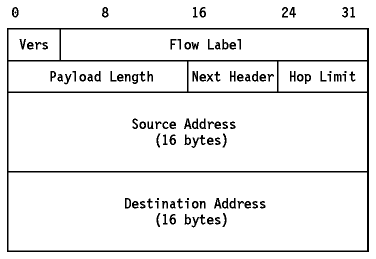
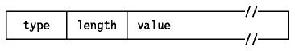
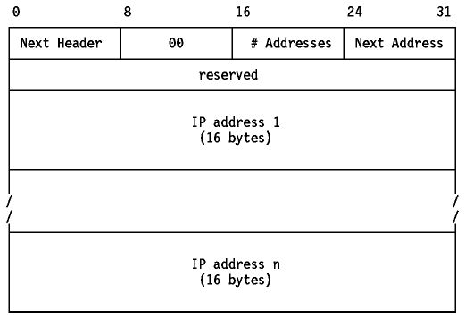
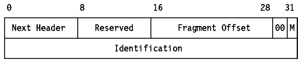
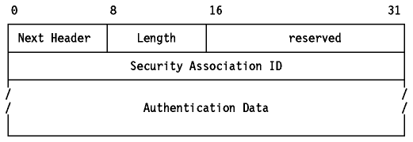
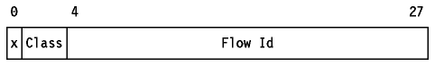

Table of Contents
Table of Contents  Functional
Description
Functional
DescriptionTable of Contents Functional
Description
The Internet has grown extremely rapidly in recent years, and by December 1994 it comprised over 32,000 networks connecting over 3.8 million computers in more than 90 countries. Since a 32-bit address field provides for over 4 billion possible addresses, it would seem that the IP addressing scheme is more than adequate to the task of addressing all of the hosts on the internet since there appears to be room for a thousand-fold increase before the IP addressing scheme is completely filled. Unfortunately, this is not the case, for a number of reasons, including the following:
In July 1994, at an IETF meeting in Toronto, the IPng Area Directors of the IETF presented RFC 1752 - The Recommendation for the IP Next Generation Protocol. The recommendation was approved by the IETF in November 1994 and made a proposed standard.
These events were the culmination of much work and discussion which involved many interested parties. In this section we will look at crucial stages in getting to this point in the development of the IPng standard.
The IPng directorate published RFC 1550 - IP: The Next Generation (IPng) White Paper Solicitation requesting requirements for IPng. The important IPng requirements are summarized here:
There were three main proposals for IPng which are described briefly below:
CATNIP is a development of an older protocol (TP/IX) that integrates IPv4, Novell IPX and OSI Connectionless Networking Protocol (CLNP) and provides a common infrastructure. It is closest in design to CLNP and emphasizes ease of interoperability with existing implementations of all three. The CATNIP packet contains all of the information required by any of the three protocols in a compressed format using a packet header of 16 bytes or more. CATNIP uses a variable length address. Existing IPv4 addresses are mapped to 7-byte addresses of which the last 4 bytes are the IPv4 address. Existing IPv4 hosts would be limited to interoperating with CATNIP hosts with addresses in this form.
CATNIP is described in RFC 1707 - CATNIP: Common Architecture for the Internet.
TUBA is also based on CLNP; simply put, CLNP replaces IPv4 in the TCP/IP protocol stack. It emphasises multiprotocol internets. Transition between IPv4 and IPng is done using a dual stack approach. The protocol stack has two independent internetwork layers and when attempting to communicate with another host, a dual stack host queries the Domain Name System for both the IP address and the Network Service Access Point (NSAP) that is the CLNP equivalent. If the Domain Name System returns both the IP address and the NSAP, the hosts communicate with CLNP as the internetwork protocol.
TUBA is described in RFC 1347 - TCP and UDP with Bigger Addresses (TUBA), A Simple Proposal for Internet Addressing and Routing. See also RFC 1526 - Assignment of System Identifiers for TUBA/CLNP Hosts and RFC 1561 - Use of ISO CLNP in TUBA Environments.
SIPP is a combination of the work of three earlier IETF working groups developing an IPng.
SIPP is an evolutionary development of IPv4. It emphasizes efficiency of operation over a wide range of network types and ease of interoperability. In addition to 64-bit addressing it includes a concept of extended addresses by using a routing option: the effective address length can be any multiple of 64 bits.
SIPP is described in RFC 1710 - Simple Internet Protocol Plus White Paper.
The IPng Directorate concluded that all three of these proposals (CATNIP, TUBA and SIPP) were insufficient to meet the accepted list of requirements, but that SIPP, as defined in RFC 1710, came closest. After some changes to the original proposal, for instance the use of 128-bit addresses instead of 64-bit ones, the IPng Directorate decided that SIPP was a suitable base for IPng and that features from the other proposals would be added to it to fulfill the remaining IPng requirements. The proposed solution is called IP Version 6 (IPv6).
The reader should be aware that the definition of IPv6 is still in progress, and the information presented here is based on Internet-Draft documents. (6)
All of the information in Section IP Version 6 (IPv6) is subject to change and should not be used as reference information.
The final definition of IPv6 will, it is expected, be published as a series of Standards Track RFCs.
IPv6 introduces a new term, node, for a system running IPv6, that is, a host or a router. An IPv6 host is a node which does not forward IPv6 packets which are not explicitly addressed to it. A router is, as in IPv4, a node which does forward IP packets not addressed to it.
The basic features of IPv6 as defined at the time of writing are described in the following sections.
IPv6 increases the length of the IP header from 20
bytes to 40 bytes. The IPv6 header contains two 16-byte addresses (source and
destination) preceded by 8 bytes of control information as shown in
Figure - IPv6 Header. The IPv4 header
(see Figure - IP Datagram Format) has two
4-byte addresses preceded by 12 bytes of control information and possibly
followed by option data. The reduction of the control information and the
elimination of options in the header are intended to optimize the processing of
the majority of IP datagrams (packets). The infrequently used fields which have
been removed from the header are moved to optional extension headers.

Figure: IPv6 Header
The different types of extension header are discussed briefly below.
A comparison between the IPv4 and IPv6 header formats will show that a number of IPv4 header fields have no direct equivalents in the IPv6 header.
Both TCP and UDP include a pseudo-IP header in the checksums they use, so in these cases, the IP header in IPv4 is being checked twice.
TCP and UDP, and any other protocols using the same checksum mechanisms running over IPv6 will continue to use a pseudo-IP header although, obviously, the format of the pseudo-IPv6 header will be different from the pseudo-IPv4 header. ICMP and IGMP and any other protocols which do not use a pseudo-IP header over IPv4 will use a pseudo-IPv6 header in their checksums.
All IPv6 nodes are expected to dynamically determine the maximum transmission unit (MTU) supported by all links along a path (as described in RFC 1191 - Path MTU Discovery) and source nodes will only send packets which do not exceed the Path MTU. IPv6 routers will therefore not have to fragment packets in the middle of multihop routes and allow much more efficient use of paths which traverse diverse physical transmission media. It is currently proposed that IPv6 require that every link supports an MTU of 576 bytes, but this value, like all other parts of the IPv6 specification at the time of writing, is subject to change.
Extension headers are placed between the IPv6 packet header and the data intended for the higher level protocol. They are counted as part of the payload length. Each header has an 8-bit Next Header field like that in the IPv6 header which identifies the type of the following header. All extensions defined at the time of writing have the Next Header field as the first byte of the header. The length of each header, which is always a multiple of 8 bytes, is encoded later in the header in a format specific to that header type. There are a limited number of IPv6 extension headers, any or all of which may be present once (and once only) in the IPv6 packet. IPv6 nodes which originate packets are required to place extension headers in a specific order although IPv6 nodes which receive packets are not required to verify that this is the case. The different types of extension header, as defined at the time of writing, are discussed briefly below. When the Next Header field contains a value other than one for an extension headers, this indicates the end of the IPv6 headers and the start of the higher-level protocol data.
IPv6 allows for encapsulation of IPv6 within IPv6 (``tunneling''). This is done with a Next Header value of 41 (IPv6). The encapsulated IPv6 packet may have its own extension headers. Because the size of a packet is calculated by the originating node to match the Path MTU, IPv6 routers should not add extension headers to a packet but instead should encapsulate the received packet within an IPv6 packet of their own making (which may be fragmented if necessary).
With the exception of the Hop-by-Hop header (which must immediately follow the IP header if present), extension headers are not processed by any route on the packet's path except the final one. Note that, as in IPv4, when a source route is included, the packet's destination IP address is actually the next node in the source route, and not the true destination, so this statement remains true but the word path means the path to the next destination listed in the source route.
IPv6 uses a common format called the Type-Length-Value (TLV) format
for variable length fields which are found in the Hop-by-Hop and End-to-End
option headers. The option has a 2-byte header followed
by the option data.

Figure: IPv6 Type-Length-Value Option Format
To optimize the performance of IPv6 implementations, individual options are aligned so that multi-byte values are positioned on their natural boundaries. In many cases, this will result in the option headers being longer than otherwise necessary, but should allow nodes to process datagrams more quickly. To allow this alignment, all IPv6 implementations must recognize two padding options:
The different extension headers are described (in the order in which they must be placed in the IPv6 packet) in the following sections.
A Hop-by-Hop header contains options which must be examined by every node the packet traverses as well as the destination node. It must immediately follow the IPv6 header if present and is identified by the special value 0 in the Next Header field of the IPv6 header. This value is not a Protocol number but a special case to identify this unique type of extension header and the value 0 remains reserved in STD 2.
Initially, no Hop-by-Hop options (other than the pad options) are defined.
The routing header is identified by the value 43 in
the preceding Next Header field. It has its next header field as the first byte
and a single byte routing type as the second. The only type defined initially
is Loose Source Routing, which operates in the same way as IPv4.

Figure: IPv6 Loose Source Routing Header
The fragment header is identified by the value 44 in the preceding Next
Header field.

Figure: IPv6 Fragment Header
The authentication header is identified by the value
51 in the preceding Next Header field.

Figure: IPv6 Fragment Header
This has the same format as the Hop-by-Hop header, but it is only examined by the target node. Since it follows the routing header this is true regardless of any routing options which may be in effect. Again, only the padding options are initially specified. The value for the preceding Next Header field has not yet been defined.
IPv6 provides for an address of 128 bits in length. Unlike IPv4 which has a strictly codified form based on the address class indicated by the high-order bits of the address, IPv6 addresses are not structured in this way. Instead, they are designed to be used with Classless InterDomain Routing (CIDR) (see Classless Inter-Domain Routing (CIDR)). The IPv6 address space is sufficiently large that it can encompass a wide range of existing and proposed address spaces. In keeping with the CIDR approach, the leading part of the IPv6 address, for example the first byte, would indicate the type of address. Such types would include a mapping of the current IPv4 address space to IPv6, OSI NSAPs, Novell IPX addresses and so on. Furthermore, the IPv6 routing header allows IP to encapsulate arbitrary addressing information in each packet. This could be used to extend the IPv6 scheme to address hypothetical systems which cannot be mapped to the IP address space. Given the length of the IPv6 address field, it is unlikely that this will be necessary in the near future.
IPv6 introduces the concept of a flow which is a series of related packets from a source to a destination which requires a particular type of handling by the intervening routers, for example ``real-time'' service. The nature of that handling can either be conveyed by options attached to the datagrams (that is, by using the IPv6 Hop-by-Hop options header) or by a separate protocol.
Each IPv6 packet contains a flow label which is a
28-bit field:

Figure: IPv6 Flow Label
The techniques to be employed to convert the Internet from IPv4 to IPv6 are collectively termed Simple Internet Transition (SIT). The emphasis in SIT is the ease of the process from the network user or operator's point of view. Compatibility features ensure investment protection for current IPv4 users, interoperability features ensure that the transition is gradual and does not impact the Internet's functionality. The transition employs the following techniques:
The transition model envisages different organizations migrating independently and in two phases. The first phase is a transition to a dual IPv6/IPv4 infrastructure. The second, which is not mandatory, is to an IPv6-only infrastructure. The second stage for any given site is only complete when that site no longer requires interoperability with IPv4. When this is complete, the restrictions imposed by the transition are removed.
The first stage is the easy one of the two, since all nodes are IPv4 capable. The second stage which involves IPv6-only areas in a network, requires more effort, particularly in the planning and deployment of routers which will perform the necessary header translation for IPv6-only nodes to interoperate with IPv4-only nodes.
This involves the replacement of IPv4-only software with IPv6/IPv4 capable software. This should happen as part of normal product release cycles, and existing IPv4 nodes would continue to run in ``IPv4-compatibility'' mode.
Conceptually, the dual stack model envisages a doubling-up of the protocols in the internetwork layer only. However, related changes are obviously needed in all transport-layer protocols to operate using either stack, and possibly in applications if they are to exploit IPv6 capabilities, such as longer addresses.
Notation: IPv6 addresses are represented as a sequence of 4 hexadecimal digits (that is, 16-bit groups) separated by colons. For brevity, the sequence 0000 is contracted to 0. IPv6 addresses which are to be mapped to IPv4 are best represented as a 96-bit IPv6 prefix in a colon delimited form followed by a 32-bit IPv4 address in dotted decimal, for example 0:0:0:0:0:ffff:9.180.214.114
Three types of IPv6 address are defined:
A new type of record is defined for the Domain Name System (DNS). The AAAA record indicates an IPv6 address. The records found in the DNS for a node depend on which protocols it is running.
Because IPv6/IPv4 nodes make decisions about which protocols to use based on the type of IPv6-address that a destination has, the incorporation of AAAA records in the DNS is a prerequisite to using the DNS with IPv6. This does not imply that name servers must use an IPv6-capable protocol stack, just that they support an additional record type.
Whether two nodes can interoperate depends upon their capabilities and their addresses:
It is possible to divide the entire routing topology of the Internet into areas in such a way that every area falls into at least one of these two types:
Note: An IPv4-complete area does not mean that no IPv6 routing can be used in the area, just that IPv4 routing is used throughout the entire area. The converse is true of IPv6-complete areas.
As noted above, the deployment of header-translating routers is part of the second phase of the transition. Therefore, IPv6-complete areas are unlikely to appear in most organizations immediately. The drivers for the introduction of IPv6-complete areas are likely to be requirements for new facilities which require IPv6, or exhaustion of the IPv4 address space. Which of these is seen as more important will vary between organizations. For example, commercial organizations with large, long-established internal IPv4 networks are unlikely to be driven by the problem of IP address exhaustion unless they also have a problem with address space within their own networks. They will, however, be likely to invest in IPv6 deployment if new business-critical applications require facilities which are only available on IPv6 or if they require connectivity to other organizations who are using IPv6-only addresses.
IPv6 packets are tunnelled over IPv4 very simply; the IPv6 packet is encapsulated in an IPv4 datagram (which may be fragmented).
There are two kinds of tunneling of IPv6 packets over IPv4 networks: automatic and configured.
As the name implies, automatic tunneling is done whenever it is needed. The decision is made by an IPv6/IPv4 host which has a packet to send across an IPv4-complete area, and it follows the following rules:
Note: The IP address must be IPv4-compatible for tunneling to be used. IPv6-only addresses cannot be tunneled to because they cannot be addressed using IPv4. Packets from IPv6/IPv4 nodes to IPv4-mapped addresses are not tunnelled to because they refer to IPv4-only nodes.
The rules listed above emphasize the use of an IPv6 router in preference to a tunnel for three reasons:
A node does not need to know whether it is attached to an IPv6-complete or an IPv4-complete area: it will always use an IPv6-router if one is configured on its subnet and will use tunneling if one is not (in which case it can infer that it is attached to an IPv4-complete area).
Automatic Tunneling may be either host-to-host, or it may be router-to-host. A source host will send an IPv6 packet to an IPv6 router if possible, but that router may not be able to do the same, and will have to perform automatic tunneling itself. Because of the preference for the use of IPv6 routers rather than tunneling, the tunnel will always be as ``short'' as possible. However, the tunnel will always extend all of the way to the destination host: because IPv6 uses the same hop-by-hop routing paradigm, a host cannot determine if the packet will eventually emerge into an IPv6-complete area before it reaches the destination host. In order to use a tunnel which does not extend all of the way to the recipient, configured tunneling must be used. There is one exception to this rule: as described in Header Translation, all tunnels terminate at routers which perform header translation.
The mechanism used for automatic tunneling is very simple.
With one exception, described in Header Translation, intermediate IPv6/IPv4 routers never examine or process the contents of an encapsulated IPv6 packet. The IPv4 datagram is treated in exactly the same way as other IPv4 datagrams forwarded by an IPv6/IPv4 router.
Configured tunneling is used for host-router or router-router tunneling of IPv6-over-IPv4. The sending host or the forwarding router is configured so that the route as well as having a next hop also has a ``tunnel end'' address (which is always an IPv4-compatible address because it must be an IPv6/IPv4 host which is reachable from an IP-complete area). The process of encapsulation is the same as for automatic tunnelling except that the IPv4 destination address is not derived from the low-order 32 bits of the IPv6 destination address, but from the low-order 32 bits of the tunnel end. When the router at the end of the tunnel receives the IPv4 datagram, it processes it in exactly the same way as a node at the end of an automatic tunnel. When the original IPv6 packet is passed to the IPv6 layer in the router, it recognizes that it is not the destination, and the router forwards the packet on to the final destination as it would for any other IPv6 packet.
It is, of course, possible that after emerging from the tunnel, the IPv6 packet is tunnelled again by another router.
Header translation is required for IPv6-only nodes to interoperate with IPv4-only nodes. Because there is no requirement for any node to be IPv6-only, header translation is regarded as an optional part of SIT. Header translation is performed by IPv6/IPv4 routers on the boundaries between IPv6-complete areas and IPv4-complete areas. Traffic crossing such a boundary can be categorized in two ways. First, traffic is either:
Routers translating between IPv4 and IPv6 must, in addition to correctly mapping between the the fields in the two headers, select the correct form of IP addresses to use:
There is one special case: tunnelled IPv6 traffic, that is, IPv6 packets encapsulated in IPv4 datagrams. If header translators treated tunnelled IPv6 traffic in the same way as other IPv4 traffic, the result would be an IPv6 packet encapsulated in another IPv6 packet. Therefore, header translators inspect the protocol number of an IPv4 datagram, and if it is 41 (IPv6) they ``decapsulate'' the packet rather than translate the IPv4 header. In effect, header translators always terminate tunnels.
Because of this effect, it is not possible, in general, for an IPv6/IPv4 node to send a packet to an IPv6-capable node with an IPv6-only address by using a configured tunnel to an IPv6/IPv4 router in the same IPv6-complete area as the target destination. If this were done, the tunnel could intersect a transit IPv6-complete area and the packet would be decapsulated, terminating the tunnel. The raw IPv6 packet could not then cross an IPv4-complete area because of its IPv6-only destination address.
In order for an IPv6/IPv4 node to send a packet to an IPv6-only address via an IPv4-capable router in the same IPv6-complete area as the target destination, the packet must contain a IPv6 source route consisting of the IPv4-capable router and the IPv6-only destination. This packet has an IPv4-compatible destination address until it reaches the target IPv6-complete area, so it can be safely tunneled through IPv4 regardless of the topology.
Although the topological model used by SIT is symmetrical, as is its classification of nodes as IPv4-only, IPv6-only and IPv6/IPv4, other aspects of the scheme are not symmetrical:
 Summary
Summary